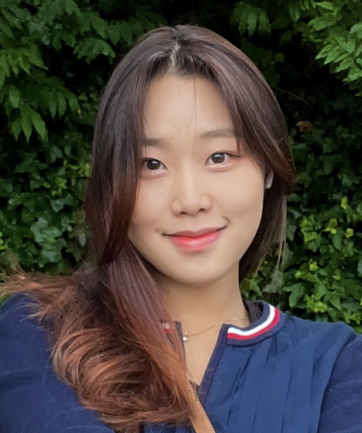

Ally Seoyeon Park

🌱 About Me
Hello! My name is Ally (Seoyeon) Park, and I am an undergraduate student studying computer science seeking for summer internship opportunities! Although I am fairly new to this field, I am eager to learn more and constantly improve my coding skills. With a passion for computer science along with my strong academical standing, I am confident in my ability to contribute to your organization and learn quickly in a professional environment!
🎓 Education
Emory University (May 2021 - August 2025)
- Bachelor of Sciences, Mathematics & Computer Science
⭐️ Skills
Technical Skills:
Java, HTML, CSS, MS Excel, MS PowerPoint
Languages:
Fluent in English and Korean, Working Proficiency in Spanish
Relevant Courses:
Linear Algebra, Foundations of Computer Science (OOP & Sorting Algorithms)
Interests:
Digital Art, Digital Marketing, Design, Singing, Golf
👩🏻💼 Experience
- Web Developer Intern
June 2023 - Present
- Developed responsive web design projects using HTML, CSS, JavaScript and conduct regular code reviews
- Optimized website’s user experience by implementing React components for dynamic content display
- Comparative Health Care Systems Research Project
June 2022 - August 2023
- Conducted 100+ surveys upon British citizens on their views about the NHS and U.S. Health Care System
- Performed ANOVA with F-statistics to analyze the bivariate data and wrote a 12-page research
- Public Relations Chair - Emory Data Interpreters Association (DIA)
August 2021 - Current
- Arranged promotion plans on 3+ social media platforms including Instagram & Facebook every week
- Created 10+ informational event posters using Adobe and CANVA
- Public Relations Chair - Emory Korean Undergraduate Student Association (KUSA)
August 2021 - Current
- Arranged promotion plans on 3+ social media platforms including Instagram & Facebook every week
- Created 10+ informational event posters using Adobe and CANVA
- Public Relations Chair - Emory Data Brazilian Jiu-Jitsu (BJJ)
August 2022 - Current
- Arranged promotion plans on 3+ social media platforms including Instagram & Facebook every week
- Created 10+ informational event posters using Adobe and CANVA
- Private Mathematics Tutor
November 2019 - Current
- Taught hour-long lessons for 10+ high school students on mathematics including SAT, ACT, and AP Calculus
- Planned individualized curriculum for students, including a monthly study plan
Contact Me